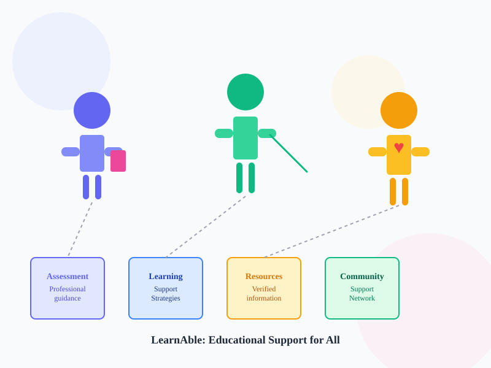

Community Engagement Project
Understanding Learning Differences Starts With Awareness
Learn about learning disabilities, explore educational support resources, understand the assessment pathway, and find verified support information.

How can we help you?
Choose your support pathway
I am a Learner
Study strategies, reading and writing support, exam planning, and confidence-building tips.
I am a Parent/Caregiver
Gain practical guidance on communication, support at home, and understanding assessment.
I am an Educator
Use inclusive classroom strategies, differentiated learning, and parent collaboration ideas.
What are learning disabilities?
Understanding the basics
A learning disability is a difference in how a person learns and processes information. It may affect reading, writing, spelling, comprehension, or mathematics. These difficulties may be persistent and may impact school performance, but they do not indicate low intelligence.
Learning difficulties can sometimes be temporary, but persistent difficulty across time, settings, and tasks may need professional guidance and individualized support.
Key message
A child may experience difficulty in one area without having low capability. Support should be individualized, respectful, and based on observation and professional assessment.
Common learning areas
Where difficulty may appear
Reading
Possible difficulty decoding words and understanding text.
Writing
Possible difficulty organizing ideas or expressing them clearly.
Spelling
Possible difficulty recalling letter patterns and word forms.
Comprehension
Possible difficulty understanding instructions or meaning.
Mathematics
Possible difficulty with number sense, calculation, or problem-solving.
How we can help
Support that is clear, respectful, and practical
Awareness
Simple information on learning differences and common misconceptions.
Pathway
Guidance about when to talk to a teacher, parent, or qualified professional.
Support
Individualized classroom, home, and study strategies for learner success.
Resources
Verified information and support options from reliable sources.
Assessment pathway
What the process may involve
Notice persistent learning difficulty
Talk to parent or teacher
Seek qualified professional guidance
Professional assessment
Understand assessment results
Recommendations and support
Educational or remedial support
Follow-up and collaboration
The website does not perform diagnosis or replace professional assessment.
Learning & awareness activity
Try a short interactive activity
Explore a simple educational activity designed to build awareness without diagnosing.
Start the activityVerified resources
Explore reliable support links
Assessment
Qualified professional pathways and support guidance.
Learning Support
Strategies for reading, writing, spelling, and mathematics.
Parent Support
Helpful home routines and communication tools.
Teacher Support
Inclusive classroom methods and positive practices.
FAQ
Common questions
What is a learning disability?
It is a difference in how a person processes and learns information, which may affect reading, writing, spelling, comprehension, or mathematics.
Does a learning disability mean low intelligence?
No. A learning difference does not indicate low intelligence. It suggests an individual may need support that matches their learning profile.
Who can assess learning difficulties?
Qualified educational psychologists, special educators, and other trained professionals may assess concerns and guide next steps.
Can this website diagnose a learning disability?
No. This portal is educational and informational only. It does not diagnose or replace professional assessment.
Feedback and questions
We value your input
Share feedback about what information would help families, students, and teachers most.
Give Feedback